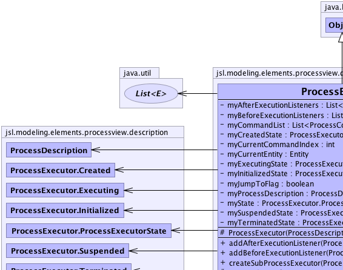
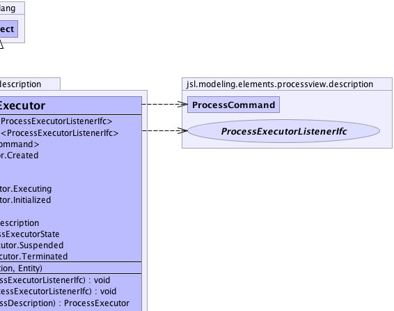
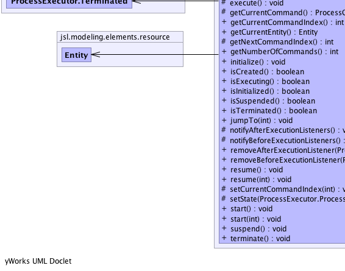
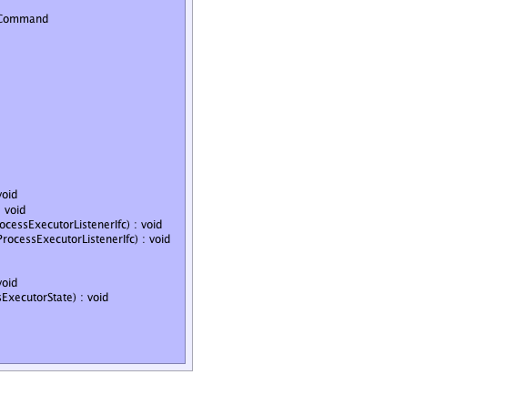

jsl.modeling.elements.processview.description.ProcessExecutor
jsl.modeling.elements.processview.description.ProcessExecutor
|
||||||||||
| PREV CLASS NEXT CLASS | FRAMES NO FRAMES | |||||||||
| SUMMARY: NESTED | FIELD | CONSTR | METHOD | DETAIL: FIELD | CONSTR | METHOD | |||||||||
java.lang.Object
public class ProcessExecutor
|  |  |
|  |  |
| Nested Class Summary | |
|---|---|
private class |
ProcessExecutor.Created
|
private class |
ProcessExecutor.Executing
|
private class |
ProcessExecutor.Initialized
|
private class |
ProcessExecutor.ProcessExecutorState
|
private class |
ProcessExecutor.Suspended
|
private class |
ProcessExecutor.Terminated
|
| Field Summary | |
|---|---|
private java.util.List<ProcessExecutorListenerIfc> |
myAfterExecutionListeners
Holds the listeners that are notified after the execution terminates |
private java.util.List<ProcessExecutorListenerIfc> |
myBeforeExecutionListeners
Holds the listeners that are notified prior to execution |
private java.util.List<ProcessCommand> |
myCommandList
A reference to the list of commands for the process description that is being executed |
private ProcessExecutor.Created |
myCreatedState
A reference to the created state for the iterative process A process executor is in the created state when it is initially constructed and can then only transition to the initialized state |
private int |
myCurrentCommandIndex
The index (zero based) to the current command to be executed in the process description |
private Entity |
myCurrentEntity
A reference to the entity that is currently involved in the execution of the process description for this executor |
private ProcessExecutor.Executing |
myExecutingState
A reference to Executing state of the process executor A process executor is in the Executing state after the resume method is called from a proper state |
private ProcessExecutor.Initialized |
myInitializedState
A reference to the initialized state of the process executor A process executor is in the initialized state after the initialize() method is called from a proper state. |
private boolean |
myJumpToFlag
Indicates that the process executor is jumping to another command |
private ProcessDescription |
myProcessDescription
A reference to the process description that is being executed |
private ProcessExecutor.ProcessExecutorState |
myState
A reference to the current state of process executor |
private ProcessExecutor.Suspended |
mySuspendedState
A reference to suspended state of the process executor A process executor is in the suspended state after the suspend method is called from a proper state |
private ProcessExecutor.Terminated |
myTerminatedState
A reference to the terminated state of the process executor A process executor is in the terminated state after the terminate method is called |
| Constructor Summary | |
|---|---|
protected |
ProcessExecutor(ProcessDescription processDescription,
Entity entity)
Creates a process executor given the supplied process description and entity |
| Method Summary | |
|---|---|
void |
addAfterExecutionListener(ProcessExecutorListenerIfc listener)
Adds a listener to be called after the execution |
void |
addBeforeExecutionListener(ProcessExecutorListenerIfc listener)
Adds a listener to be called prior to the execution |
ProcessExecutor |
createSubProcessExecutor(ProcessDescription processDescription)
Creates a sub-process executor on this executor that will execute the given process description |
protected void |
execute()
The main method that executes commands within the ProcessExecutor |
protected ProcessCommand |
getCurrentCommand()
Gets the command associated with the current command index This method returns null if the index is not valid (out of range). |
int |
getCurrentCommandIndex()
Returns an integer representing the location of the current command within process description, zero based |
Entity |
getCurrentEntity()
Gets the entity currently executing |
protected int |
getNextCommandIndex()
Used to get the command index that is next to be executed |
int |
getNumberOfCommands()
Returns the total number of commands in the associated process description |
void |
initialize()
After being created the process executor must be intialized before being started |
boolean |
isCreated()
Checks if the process executor is in the created state. |
boolean |
isExecuting()
Checks if the process executor is in the Executing state After the process executor has been resumed this method will return true |
boolean |
isInitialized()
Checks if the process executor is in the initialized state. |
boolean |
isSuspended()
Checks if the process executor is in the suspended state After the process executor has been suspended this method will return true |
boolean |
isTerminated()
Checks if the process executor is in the terminated state After the process executor has been terminated this method will return true |
void |
jumpTo(int commandIndex)
Cause the execution of the process executor to jump to the command indicated by the commandIndex. |
protected void |
notifyAfterExecutionListeners()
Notifies the before execution listeners |
protected void |
notifyBeforeExecutionListeners()
Notifies the before execution listeners |
void |
removeAfterExecutionListener(ProcessExecutorListenerIfc listener)
Removes the listener that is called after the execution |
void |
removeBeforeExecutionListener(ProcessExecutorListenerIfc listener)
Removes the listener that is called prior to the execution |
void |
resume()
Resumes the execution of the process executor at the next command after the previously executed command |
void |
resume(int commandIndex)
Resumes the execution of the process executor at the command indicated by the commandIndex. |
protected void |
setCurrentCommandIndex(int index)
Sets the index to the current command. |
protected void |
setState(ProcessExecutor.ProcessExecutorState state)
Used to set the state of the executor |
void |
start()
Starts the process executor executing at the first command in the associated process description |
void |
start(int commandIndex)
Starts the process executor executing at the command indicated by the commandIndex. |
void |
suspend()
Suspends the execution of the process executor at the current command |
void |
terminate()
Terminates the execution of the process executor |
| Methods inherited from class java.lang.Object |
|---|
clone, equals, finalize, getClass, hashCode, notify, notifyAll, toString, wait, wait, wait |
| Field Detail |
|---|
private ProcessDescription myProcessDescription
private java.util.List<ProcessCommand> myCommandList
private int myCurrentCommandIndex
private Entity myCurrentEntity
private ProcessExecutor.ProcessExecutorState myState
private boolean myJumpToFlag
private ProcessExecutor.Created myCreatedState
private ProcessExecutor.Initialized myInitializedState
private ProcessExecutor.Suspended mySuspendedState
private ProcessExecutor.Executing myExecutingState
private ProcessExecutor.Terminated myTerminatedState
private java.util.List<ProcessExecutorListenerIfc> myBeforeExecutionListeners
private java.util.List<ProcessExecutorListenerIfc> myAfterExecutionListeners
| Constructor Detail |
|---|
protected ProcessExecutor(ProcessDescription processDescription,
Entity entity)
processDescription - entity - | Method Detail |
|---|
public final int getNumberOfCommands()
public final int getCurrentCommandIndex()
public final Entity getCurrentEntity()
public final void addBeforeExecutionListener(ProcessExecutorListenerIfc listener)
listener - public final void removeBeforeExecutionListener(ProcessExecutorListenerIfc listener)
listener - public final void addAfterExecutionListener(ProcessExecutorListenerIfc listener)
listener - public final void removeAfterExecutionListener(ProcessExecutorListenerIfc listener)
listener - public final void initialize()
public final void start()
public void start(int commandIndex)
java.lang.IndexOutOfBoundsException - - if the index is out of range (index < 0 || index >= Number of commands).commandIndex - represents the index in the sequence of commands,
index = 0, represents the first commandpublic final void resume()
public void resume(int commandIndex)
commandIndex - public void jumpTo(int commandIndex)
commandIndex - public void suspend()
public void terminate()
public ProcessExecutor createSubProcessExecutor(ProcessDescription processDescription)
processDescription -
public final boolean isCreated()
public final boolean isInitialized()
public final boolean isTerminated()
public final boolean isSuspended()
public final boolean isExecuting()
protected final ProcessCommand getCurrentCommand()
protected final void setCurrentCommandIndex(int index)
protected final void execute()
protected final int getNextCommandIndex()
protected final void setState(ProcessExecutor.ProcessExecutorState state)
state - protected final void notifyBeforeExecutionListeners()
protected final void notifyAfterExecutionListeners()
|
||||||||||
| PREV CLASS NEXT CLASS | FRAMES NO FRAMES | |||||||||
| SUMMARY: NESTED | FIELD | CONSTR | METHOD | DETAIL: FIELD | CONSTR | METHOD | |||||||||